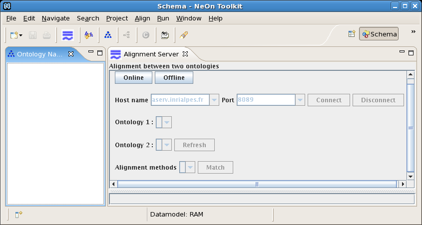

A plugin for using the Alignment Server for computing and managing alignments between ontologies within NeOnToolkit.
This plugin allows ontology users to match existing ontologies i.e. computing alignments between them, retrieve existing alignments, and store available alignments on the Alignment Server for reusing and sharing.
The Alignment server and API are available from the NeOn toolkit, through a dedicated plug-in: the NeOn Alignment plug-in. This allows manipulating alignments from the NeOn toolkit and sharing them throughthe Alignment server.
The NeOn Alignment plug-in embedds the Alignment API and can use the web service interface to connect to any alignment server.
A version of the NeonToolkit is available at http://www.neon-toolkit.org.
From this site, you download a zipped NeonToolkit file according to your Operating System (OS). After unzipping this file, a new directory is created, and within it you have a directory "plugins" and an executable file.
For instance, if your OS is Linux, we have to download the zipped file "NeOnToolkit-1.0-extended-B723-Linux.zip".
A version of NeOn Alignment Plugin is available at http://gforge.inria.fr/projects/alignapi/ . From this site you donwload the jar file "neonalign.jar" and put it in the "plugins" directory of the NeOnToolkit.
To run NeonToolkit with the NeOn Alignment Plugin, you launch the NeOnToolkit with the executable file (e.g. under Linux, you run the "NeonToolKit.sh" script). You will see an interface screen like the following.

To activate the NeOn Alignment Plugin from the NeOnToolkit Menu, click on the "Align" menu or the button on Toolbar, a view "Alignment Server" for the plugin will be openned.

As a plugin integrated into NeonToolkit, the NeOn Alignment Plugin can access to data models implemented in NeonToolkit and manipulate them. More precisely, NeOn Alignment Plugin can get from Ontology Navigator in NeonToolkit the URIs of openned ontologies. Additionally, the NeOn Alignment Plugin is able to add an alignment as an OWL ontology to Ontology Navigator. This may provide a way to exploit and share alignments, which are computed by the NeOn Alignment Plugin, among different plugins in the NeonToolkit environment.
NeOn Alignment Plugin can work in two modes : offline and online. Roughly speaking, the offline mode allows users to reach main functionalities of the Alignment Server without connection to the server while the online mode offers additionally mecanisms to store and reuse alignments.
In the offline mode which is activated by clicking on button "Offline", the NeOn Alignment Plugin can access to NeOnToolkit ontologies (i.e. openned ontologies in Ontology Navigator) and match any pair of them. Resulting alignments can be stored as local system files and imported to Ontology Navigator as OWL ontologies.
In the online mode which is activated by clicking on button "Online", the NeOn Alignment Plugin provides all functions from the Alignment Server. Resulting alignments are stored on the server and exported to Ontology Navigator as OWL ontologies. This allows NeOnTookit users, with help of the Ontology Editor, to use, share or edit alignments.
In the sequel, we will show how to connect to the INRIA's Alignment Server from the plugin and to work with it.


It should be possible at some point to use the NeOn Alignment plugin jointly with the Ontomap plugin developed by Ontoprise.
Because the NeOn toolkit is developed at a steady pace, correspondences between versions are very important.
| NeOn toolkit | particular version | Alignment API |
| 1.0 | open source | 3.3 |
| 1.1 | open source | 3.4 |
More details about the NeOn Alignment Plugin can be found in Matching ontologies for context: The NeOn Alignment plug-in.
Also put screen cast